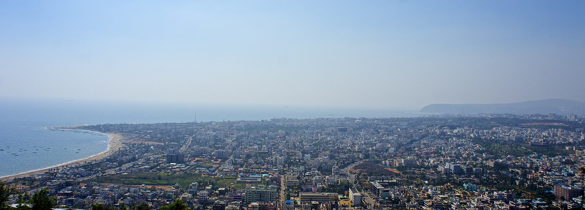
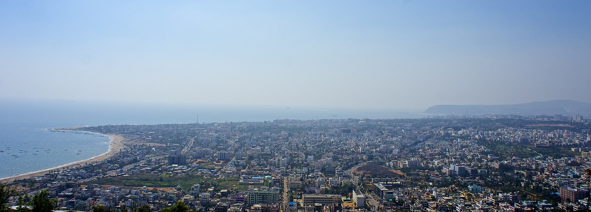

Visakhapatnam also known as Vizag, Viśākha or Waltair,[1][16][17] is the largest and most populous metropolitan city in the Indian state of Andhra Pradesh. It is between the Eastern Ghats and the coast of the Bay of Bengal.[18][19] It is the second largest city on the east coast of India after Chennai, and the fourth largest in South India. It is one of the four smart cities of Andhra Pradesh selected under the Smart Cities Mission[20] and is the headquarters of Visakhapatnam district.[21] With an estimated output of $43.5 billion, it is the ninth largest contributor to India's gross domestic product as of 2016
Visakhapatnam's history dates back to the 6th century BCE. It was ruled by the Andhra Satavahanas, Vengi, the Pallava and Eastern Ganga dynasties.[24][25] Visakhapatnam was an ancient Port city which had trade relations with the Middle East and Rome. Ships were anchored at open roads and were loaded with cargo transported from Visakhapatnam shore using small Masula boats. A reference to Vizagapatnam merchant is available in the inscriptions of Bheemeswara temple (1068 CE) of East Godavari District. During the 12th century CE, Vizagapatnam was a fortified merchandise town managed by a guild.[26] European powers eventually established trade operations in the city, and by the end of the 18th century it had come under French colonial rule.[27][28] Control passed to the East India Company in 1804 and it remained under British colonial rule until Indian independence in 1947.
.jpg)
European powers eventually established trading operations in the city and Visakhapatnam came under French colonial rule at the end of the 18th century.[27][28] The British East India Company captured Visakhapatnam after the 1804 Battle of Vizagapatnam and it remained under British colonial rule until Indian independence in 1947 which was a part of the Northern Circars.
The city was ruled by the Andhra Kings of Vengi and Pallavas. The city is named after Sri Visakha Varma. Legend has it that Radha and Viśakha were born on the same day and were equally beautiful. Sri Visakka Sakhi is the second most important gopi of the eight main gopis. She carries messages between Radha and Krishna and is the most expert Gopi messenger. Residents believe that an Andhra king built a temple to pay homage to his family deity Viśakha. This is now inundated under seawater near R K Beach. Another theory is that it is named after a woman disciple of Buddha named Viśakha. Later it was ruled by Qutb Shahis (1571–1674), Kingdom of Jeypore (1535–1571) and (1674–1711), Mughal Empire (1711–1724), Nizam (1724–1757) and France (1757–1765) before being captured by the British in 1765. European powers eventually established trading operations in the city and Visakhapatnam came under French colonial rule at the end of the 18th century.[27][28] The British East India Company captured Visakhapatnam after the 1804 Battle of Vizagapatnam and it remained under British colonial rule until Indian independence in 1947 which was a part of the Northern Circars.
 

The city is situated between the Eastern Ghats and the Bay of Bengal.[18] The city coordinates lies between 17.7041 N and 83.2977 E.[13][14] The city's area is 682 km2. The average elevation is 45 metres.[48] Visakhpatnam is situated in Coastal Andhra Region.[49] The city is surrounded by the Simhachalam Hill Range to the west, the Yarada Hills to the southeast, and Kambalakonda Wildlife Sanctuary to the northwest. The hills play an important role in Visakhapatnam's ecological environment and cover over 621.52 km2.[50]
Visakhapatnam has a tropical wet and dry climate (Köppen Aw).[14] The annual mean temperatures range between 24.7–30.6 °C (76–87 °F), with the maximum in May and the minimum in January; the minimum temperatures ranges between 17–27 °C (63–81 °F). The highest maximum temperature ever recorded was 42.0 °C (107.6 °F) in 1978, and the lowest was 10.5 °C (51 °F) on 6 January 1962.[51][52] It receives rainfall from the South-west and North-east monsoons[14] and the average annual rainfall recorded is 1,118.8 mm (44.05 in).[53] In October 2014 Cyclone Hudhud made landfall near Visakhapatnam.[54
Telugu is the official and the most predominantly spoken language by native speakers.[68][69] Two dialects of Telugu are spoken by the people, the common dialect and the Uttarandhra (North Eastern Andhra) dialect. The latter is mainly spoken by the people who originally belong to the districts of Vizianagaram and Srikakulam.[70] A cosmopolitan population of Visakhapatnam comprises Tamils,[71][72] Malayalis,[73][74] Sindhis,[75] Kannadigas,[76][77] Odias,[78] Bengalis and Bihari migrants from other regions of India.[79][80] There is also an Anglo-Indian community, regarded as the first cosmopolitans of the city.[81] According to the 2011 census, Telugu is the most spoken language in the city, with 92.13% speakers, followed by Urdu (2.77%), Hindi (2.19%), Odia (0.92%).[67]
Greater Visakhapatnam Municipal Corporation (GVMC) is the civic body that oversees the civic needs of the city.[84] One of the earliest municipalities in this area, the Vizag (Visakhapatnam) Municipality was set up in 1858 to fulfil the basic infrastructural needs of the people. It was converted into a municipal corporation in 1979. Greater Visakhapatnam Municipal Corporation came into existence on 21 November 2005 after the release of G.O by Govt of Andhra Pradesh.[85] It has a jurisdictional area of 681.96 km2 (263.31 sq mi), which includes the merged municipalities of Gajuwaka, Anakapalle and Bheemunipatnam.[86][87] Although as per the 2011 census, it is 513.61 km2 (198.31 sq mi) mentioned in the district town amenities handbook of Andhra Pradesh, portraying a rise in area covered by the municipal corporation in these years[88] The municipal corporation of Vishakapatnam is governed by three acts. First is the State Municipal Act, the Andhra Pradesh Municipalities Act 1965, the Andhra Pradesh Municipal Corporations 1994 Act, as well as an act specific to the Vishakapatnam Municipal Corporation Act 1979.[89][90] The city is divided into 9 zones, In a recent agglomeration of five Bheemili villages with a population of 19,000 into the GVMC jurisdiction the number of wards has increased to 98.[91]
Visakhapatnam is one of the 100 fastest growing cities in the world,[125] which has a GDP of $43.5 billion. It is the 9th richest city in India. The usual seafood exporting capacity of the harbour is 115,000 tonnes (127,000 short tons)[126] and during the FY 2015, it topped seafood exports in terms of value among other ports.[127] Visakhapatnam Port and Gangavaram Port are the two ports of the city and the former one topped charts which handled 60,000,000 tonnes (66,000,000 short tons) of cargo during the financial year 2016–17.[128] The Hindustan Shipyard undertakes building and repairing of Naval fleet.[129]
The city commuters prefer city buses and auto rickshaw as the primary mode of transport, followed by two-wheelers and cars.[159] Road and rail are preferred for long-distance commuting and are supported by Dwaraka bus station and Visakhapatnam railway station respectively.[160][161] It also has sea and air travel infrastructure such as, Visakhapatnam Port[162] and Visakhapatnam Airport.[163] The APSRTC operates city, district and inter-state bus services from Dwaraka bus station.[164] Over 600 city buses operate over 150 routes, in addition to Bus Rapid Transit System in two corridors of Pendurthi and Simhachalam.[159]: 21 A planned Integrated Bus Terminal Complex would be built at Maddilapalem.[165] Apart from buses, there are about 25,000 auto rickshaws plying on the city roads which provide intermediate public transport.[159]: 22 Visakhapatnam is the headquarters of South Coast Railway zone of Indian railways. Visakhapatnam railway station is as an A1 station[166] with the highest gross revenue in the Waltair railway division.[167] It serves an average of 20,000–25,000 passengers daily and may rise to 40,000 during festivals.[161] It has the country's largest diesel locomotive shed with a capacity of 206.[168] Visakhapatnam Metro is a planned metro rail project.[169] Visakhapatnam Airport Terminal As of 2013, the percentage of transport mode shares in the city are, 18% buses, 9% autos, 15% two-wheelers, 2% cars and 55% non-motorised transport (bicycles and pedestrians).[159]: 23 The total road network accounts for a total length of 2,007.10 km (1,247.15 mi).[170] NH16, a major highway and a part of the Golden Quadrilateral system bypasses the city. Visakhapatnam Airport had served a total of 2,815,205 passengers in 2018, an increase of 16.8% from the previous year. It handled a total of 23,264 aircraft during that year. Visakhapatnam Port is one of 13 major ports in India and the only major port of Andhra Pradesh. It is India's second-largest port by volume of cargo handled. It is located on the east coast of India and is located midway between the Chennai and Kolkata Ports. Cruise shipping is operational between Visakhapatnam and Andaman and Nicobar islands.[171][172]
| AREA | 1048km^2 |
|---|---|
| IAS | Dr.A.Mallikarjuna |
| IPS | shanka brata bagchi |
| DGP | A.Ravi sahnkar |
| population | 2,385,000 |
| DIG | Vishal |
| GVMC commisioner | saikanth varma |